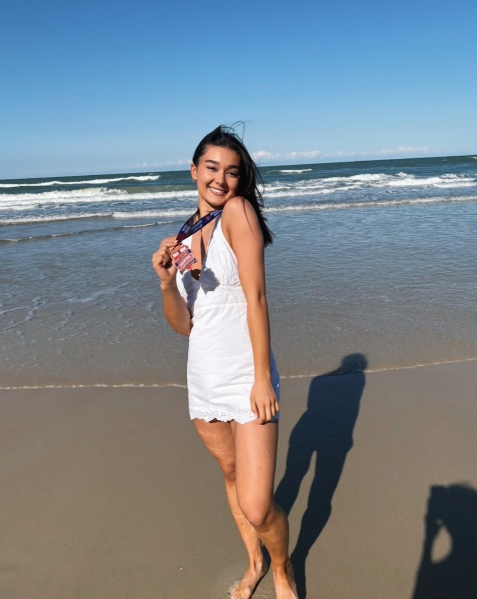

About Me
Hi! I'm Giovanna Franz, a sophomore at Thiel College diving deep into the world of web design. I love bringing clean, modern interfaces to life and exploring everything from front-end frameworks to playful creative coding.
Current Focus
- Education: Current Sophomore at Thiel College
- Passions: Front-end development, color theory, web accessibility
Things I Love
- Time with family
- Cheerleading
- Taylor Swift
- Cats üê±
- Coffee
Contact
Phone: (234) 430-1648
Email: GFran366@thiel.edu
Instagram: @gmariefranz